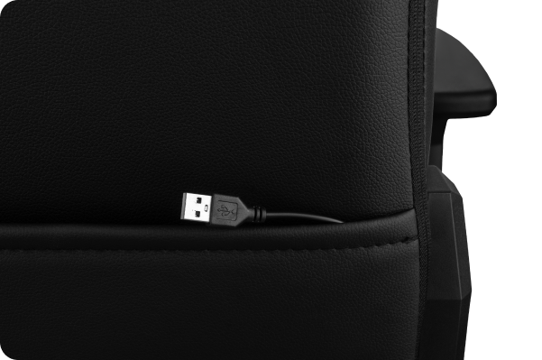
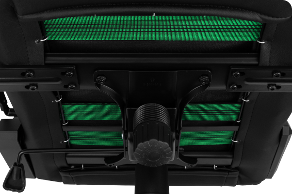
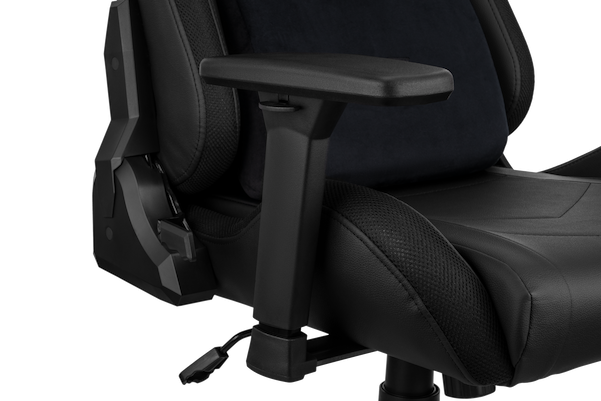
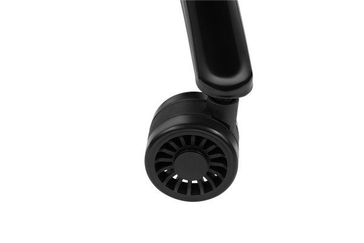

2E GAMING OGAMA II
– тепер можливо все!
Налаштуйте свої правила гри, відкиньте обмеження та відчуйте справжню природну сутність разом із оновленим кріслом 2E GAMING OGAMA II!
Перевірений дизайн із природним підтриманням тіла
Геймерський дизайн крісла перевірений мільйонами годин гри. Крісло ніби огортає тіло, аби користувач був максимально сконцентрованим на грі, навчанні чи роботі. Ергономіка настільки природна, що з крісла не хочеться підводитися. Сядьте на нього хоча б на хвилину, щоб зрозуміти, що таке крісло, яке знається на комфорті і турботі про здоров’я.
Відкрийте силу світла
Досить підлаштовуватися під інших чи бути в тіні. Керуйте своїми емоціями та стилем за допомогою пульта й одного з 12 моноколірних режимів. Використовуйте спеціальні динамічні сценарії підсвічування, змінюйте яскравість і швидкість RGB-підсвічування – тепер кожен може бути собою, проявляючи індивідуальність!
Велюрові подушки, які знають і пам’ятають, що таке турбота
Велюрові подушки – «прихована зброя» цього крісла. Адже вони дають змогу не тільки підтримати природне положення тіла, а й робити це саме в тих точках тіла, де приховано найбільше навантаження. Тепер комірна та поперекова зони в повній безпеці, адже їм гарантована максимальна підтримка, а тілу – комфорт!
Відкрийте силу світла
Досить підлаштовуватися під інших чи бути в тіні. Керуйте своїми емоціями та стилем за допомогою пульта й одного з 12 моноколірних режимів. Використовуйте спеціальні динамічні сценарії підсвічування, змінюйте яскравість і швидкість RGB-підсвічування – тепер кожен може бути собою, проявляючи індивідуальність!
-

Свобода від дротів
Забудьте про обмеження! Відкиньте дроти, що зв’язують та лімітують! Адже тепер немає необхідності підключати кабель живлення до ПК. Достатньо просто підключити крісло до повербанку, розмістити батарею в спеціальній кишені і вільно сяяти на повну. А крісла з кабелями живлення – залиште в ері динозаврів!
-

Надійність перш за все
Якісно і безпечно. Досить витрачати час на неякісні крісла зі слабкими каркасами. Отримайте перевірену часом безпеку та надійність. Повністю металевий каркас із нейлоновими стропами гарантує надійне підтримання та тривалу експлуатацію крісла. Крісло має механізм типу «метелик», що дає змогу гойдатися на кут до 18°. Пружність механізму можна регулювати за допомогою пружини, розташованої під сидінням. Зручно розташований фіксатор зафіксує крісло, якщо є необхідність у статичному підтриманні.
Відчуйте як крісло обіймає
Саме так! Це крісло, яке немов обіймає свого щасливого власника, поки він зайнятий справами. Такого ефекту вдалося досягти завдяки пінному наповнювачу високої щільності. А ще він рівномірно розподіляє тиск і приймає найоптимальнішу форму для використання. Перевірено. Матеріал має значення.
-

Епоха 3D-підлокітників
3D-регулювання підлокітників – це новий рівень для комфорту рук. Регулювання у три кроки дає змогу рукам не тільки бути в тонусі, а й виконувати всі завдання ефективніше, ніби вони втратили противагу силі тяжіння. Тепер у конкурентів і суперників менше шансів на перемогу й успіх.
-

Розмір має значення
Хто каже інше, той немає збільшені та посилені коліщатка діаметром 75 мм. Адже з такими коліщатками відчувається більша опора, мобільність і комфорт, який важко передати словами, але так легко відчути!
Крісло для будь-яких життєвих викликів
Працювати, грати чи відпочивати? Будь-яке рішення тепер можливе! Вибирайте найзручніше положення, регулюйте власний кут нахилу від 90 до 180º.
Дбаємо про себе – турбуємося про природу
Екошкіра – це саме те, що потрібно геймерам і те, що не шкодить планеті. Екошкіра легка в догляді, стійка до зношування, не вбирає запахів і пропускає повітря. Турбуємося про довкілля, піклуючись про себе!
Особливості
- Екошкіра
- RGB-підсвічування, пульт і 12 моноколірних режимів
- Підключення крісла до повербанку
- Пінний наповнювач високої щільності
- Велюрові подушки з ефектом пам’яті
- Газліфт 4-го покоління
- Кут нахилу від 90 до 180º
- Посилені коліщатка діаметром 75 мм
- 3D-підлокітники
- Механізм типу «метелик», що дає змогу гойдатися на кут до 18°